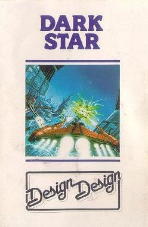
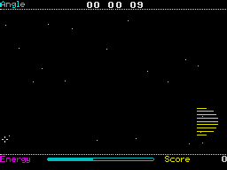

Dark Star


{kind=link}

| Publisher: | Design Design |
| Price: | £7.50 |
| Year: | 1984 |
| Source: | CRASH, Issue 11 |

It’s taken quite a while between previewing Dark Star and reviewing it. Much of this has had to do with the fact that programmer Simon Bratell kept fiddling with the game, making it faster and faster until now it must surely win the accolade as the fastest Spectrum graphics ever. It would be a mistake to assume that this wire frame game is a copy of the popular arcade machine game ‘Star Wars’, because although it resembles it in some respects, it differs a lot in many important ways and, in any case, it was designed long before ‘Star Wars’ appeared in the arcades.
Anyway, onto the game. The Dark Star galaxy is divided into a 16 by 16 grid of sectors in the galactic plain. All the spurious blurb which gets you going is very detailed and well worth avoiding, best to dive in through the fabled front end which has been user defined out of existence! Selecting ‘instructions’ on screen is much better — it says, ‘Fly around the universe. If it moves shoot it. If it doesn’t shoot it anyway. If it’s square fly through it!’

Keys for control are left, right, up, down, accelerate, decelerate and fire, any of which may be used on any key or all the same one if you like. Anyway, onto the game. There is a sort of adventurish and strategy overtone to Dark Star in as much as you are trying to clear the place of alien forces. The action takes place over three different areas, deepest space, hyperspace (accessed through Warp Gates, which are rotating yellow squares) and on the surface of numerous planets. When the planets in a sector of space have been cleared of aliens, using a Warp Gate will take you into another sector.
In space alien fighters will swoop on you, firing bolts of plasma and they do this by prediction, so it’s best to avoid flying straight for too long. Your firing is done by directing the cross wire cursor at targets. Shield energy may be increased by flying through rotating blue squares (energy concentrations). The Warp Gates have four opening and shutting sections which allow you to hyperspace North, South, East or West. Whilst in hyperspace you must travel along through a series of squares. The tunnel winds about in a lively fashion and breaking through its walls puts a heavy load on your shields.
Planetfall is achieved by flying straight at one. The surface has towers occupied by the enemy which fire at you. Shooting at the towers will cause them to collapse. A map display of the galaxy indicates your position and shows where the forces are concentrated as lightly, well and heavily defended, with a further designation of ‘military centre’. A similar display can be used on the surface of a planet. This shows bases, fuel dumps, space ports and so on. Your craft cannot leave the surface of a planet until all the enemy bases have been destroyed.
Dark Star is far too complicated for a mere collator of reviews to explain, something which was fully intended by its designer, so it is best to try it out for yourself! Its much vaunted features include the universe, stopwatch mode, 2 million way movement, full screen playing area (with graphics in the border area), and its makers say it does not include Materialisations, Sprites (naturally), Unused RAM (who needs it) Stupid Scenario (there is a bit about the Evil Lord’s tyrannical empire however), and no Magic Rings (wot no rings!). The other thing is this amazing front end which defines the meaning of ‘user’ and allows customisation of the game. For his endeavours in the field of advancing home computer games, programmer Simon Bratell has insisted that CRASH give Dark Star 100 for the Use of Computer rating...
CRITICISM
‘When I first saw Dark Star I thought it was a boring old copy of ‘Star Wars’ because at first glance it looks like it, but how could I be so wrong? Your task, to go round the universe and blast everything into nothingness, is almost impossible as there can be up to 204 planets with 5 bases on each. All the games I have seen from Crystal (Design Design) have had quite useful front ends, but this takes the biscuit, and makes it into a playable game even when you’re useless at it. I hope this works out as a CRASH smash, because it deserves it just for the front end alone and the amusing, ever changing hi-score tables. A word of warning, I found the hyper load made it difficult to load, but perseverance is worth it.’
‘Dark Star has, to say the least, stunningly fast and smooth 3D vector graphics. They are not super detailed but the rest makes up for it. The game is fairly difficult to play at first, taking quite a bit of time to master. Dark Star will be the sort of game that grows on you as time goes by.’
‘After numerous attempts, numerous tape decks, I managed to get Dark Star loaded, though the way I did it was unethical. Well, onto the game; it’s certainly the best and certainly the fastest 3D shoot em up game I’ve ever played to date (note the ‘to date’). This game is very user friendly (pity the same can’t be said about the author — he will know who I am!) offering truly user definable keys — you can program one key to do everything, although not much will happen if you do this. You can define whether you want nasty and horrible aliens with deadly weapons, or nice ones that can’t kill you off, and what type of format you want the screen to take. Dark Star has many amusing touches like the hall of fame — most times you load it, there are different ‘names’ (one time had bits of songs in it, another had references from Monty Python films). All in all Dark Star is a very good game with some nice effects. Incidentally there is another game on the cassette, but you need a code word to get at it, and no one’s saying what it is (yes — the first reviewer proof game). Signed, Yours, the ’orrible little reviewer (I hope you’re satisfied with this review).’
COMMENTS
| Control keys: | User definable to the Nth degree |
| Joystick: | Kempston, Fuller, Protek, AGF, Sinclair 2, Para-Systems |
| Keyboard play: | Exceptionally responsive, good positions through UDK |
| Use of colour: | Above average, good for wire frame and a welcome addition to this type of game |
| Graphics: | Breathtakingly fast though not very detailed |
| Sound: | Very good |
| Skill levels: | Definable through front end |
| Lives: | Only 1 |
| Screens: | 2 |
| Special features: | Flexible front end, and second program included |
| General rating: | Excellent shoot em up, certainly the fastest. |
| Use of computer: | 100% |
| Graphics: | 88% |
| Playability: | 86% |
| Getting started: | 89% |
| Addictive qualities: | 85% |
| Value for money: | 87% |
| Overall: | 89% |